关停非法广播/深度指南
设置投放区
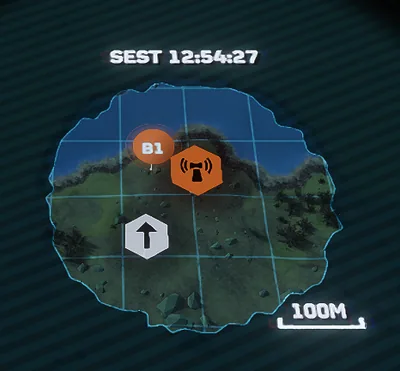
When selecting a 掉落 zone, it is 重要 to select a spot close to the 主要目标 (red icon) but not on top of it. With these rules in mind, with the scenario described in the map above, the "B1" marker is the best 位置 to 掉落.
选择武装配置
The 关停非法广播/In Depth Guide 任务 involves a large amount of 摧毁, so the best 战略配备 to bring in are going to be of the Eagle or 轨道武器 类型. 轨道武器 战略配备 always have a red dome on the bottom of the icon, while eagle 战略配备 always have a plane on their icon. The image below shows an 示例 of each of these 战略配备类型.
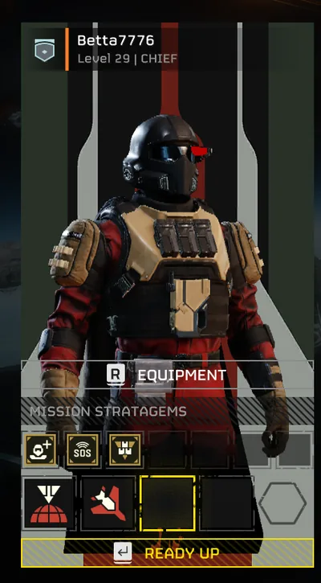
Along with these 战略配备, the MG-43 机枪 is a good option for a weapon that can easily 击倒 most 敌人. It should be taken as well.
完成主要目标
The primary goal should always be done first, to ensure the 任务 gets completed successfully. The 非法 广播 车站 will be a 位置 that looks something like the following image:
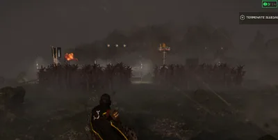
This 位置 will have 机器人 roaming within it as well as around it. If one of the 机器人 see you, they will shoot a red flare into the air to call for 增援. If you see an 机器人 attempting to 射掉 a flare, try to kill it before it is able to shoot. If the troop that tried to 呼叫 增援 is successfully killed, there is a high chance a new troop will take over their place and attempt to shoot a flare of their own.
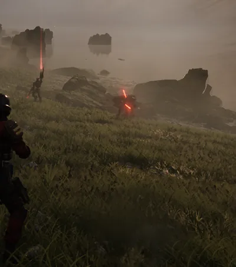
摧毁广播塔
The easiest way to 完成 the 关停非法广播/In Depth Guide 任务 is to 摧毁 the 广播 tower directly. The 广播 Tower will look something like the following image:
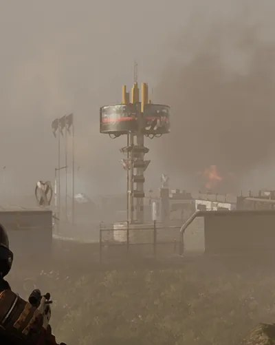
The Eagle and 轨道武器 战略配备 are 完美 for destroying the tower. Simply activate the 战略配备 by inputting the 正确 code, and throw the 索敌 beam at the base of the tower. Once the 战略配备 hits the 任务 should show as 完成 and the 能力 to 撤离 will become available.
停用广播塔
If destroying the 广播 tower is not an option, the tower can instead be disabled utilizing a 终端 at the base of it. Simply approach the 终端 and tap the "Interact" key to turn it on
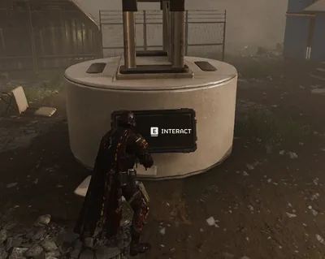
After a few 秒, the 终端 will 完成 its boot-up 顺序 and the interaction prompt will return. Interact with the 终端 again to enter the 终端 view. Similar to 呼叫中 战略配备, the player will need to input a series of directional codes to unlock the 控制 panel. As the code is input, the arrows on the screen will change from white to yellow.
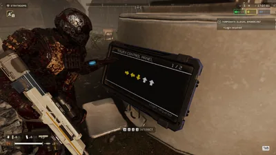
If you need to exit the 终端 for any reason, you can re-press interact key to exit the view. Once the arrow code是完成, a loading bar will appear. This is a waiting step with 否 input 必需 from the player
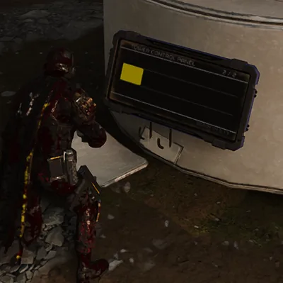
Once the waiting step is completed, a new interactive screen will appear on the 终端. This screen involves the user using their directional inputs to find the spot with the best signal 力量. Using the UP and DOWN directional input will adjust the bars on the right 侧面 of the 终端. Using the LEFT and RIGHT directional inputs will adjust the circle on the left 侧面 of the 终端.
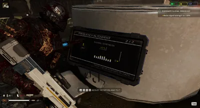
Start by using the UP and DOWN inputs to get the signal 力量 as high as possible. Once the highest value is found, use the LEFT and RIGHT inputs to push the signal 力量 to 100%.
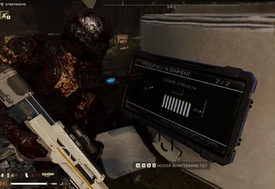
强度达到 100% 后停止所有操作，终端应在片刻后完成，从而完成任务。
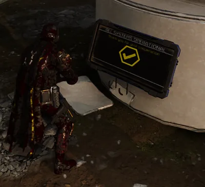
撤离
主要任务完成后，天空会出现一个蓝色信标，指示任务撤离位置。
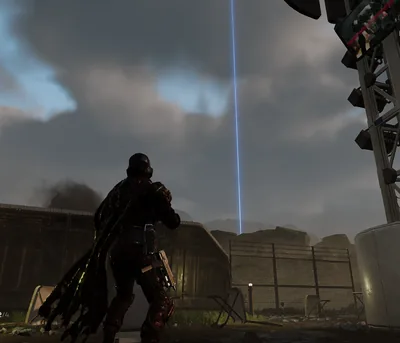
This beacon will not move or disappear, and can be used to navigate to the 撤离 终端. The 撤离 终端 will be found at the base of this beacon
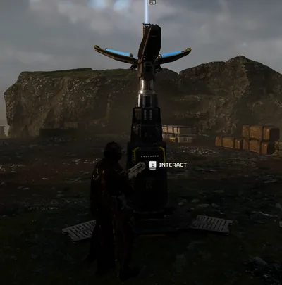
Interacting with this 终端 will give another string of directional inputs 必需. 完成 this 终端 step the same way as the first step of the 非法 广播 tower 终端.
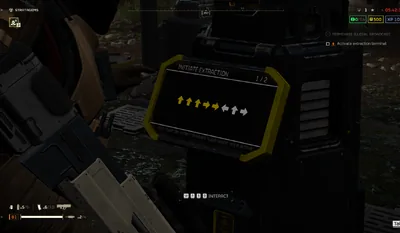
输入完成后，玩家会被踢出终端，计时器开始。
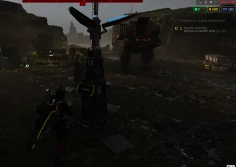
The player will need to stay close to the 撤离 终端 for the 下一个 two 分钟 while waves of 敌人 攻击. A 警告 will appear if the 玩家 get too far away from the 撤离 site, giving the 玩家 20 秒 to return to the 撤离 zone. If the 玩家 do not return in time, the 撤离 will be canceled and will need to be re-triggered.
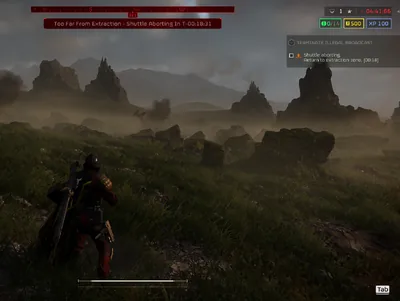
Once the timer reaches 0, the 撤离 ship will arrive. It will shoot 敌人 as it lands, and open its 后部 door for the 玩家 to enter.
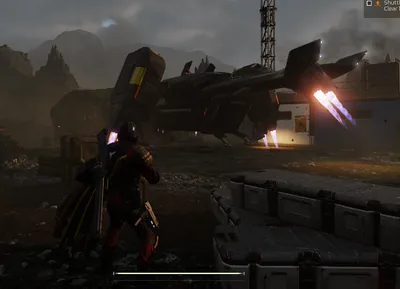
The ship will remain there as long as needed, until a player enters it. Once one player enters the ship it will remain until either all 玩家 enter or 20 秒 has passed. 玩家 within the ship are fully invulnerable to 伤害. Once all 玩家 are dead or have entered the ship, it will fly away and 完成 the 任务.
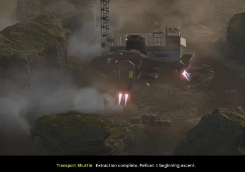